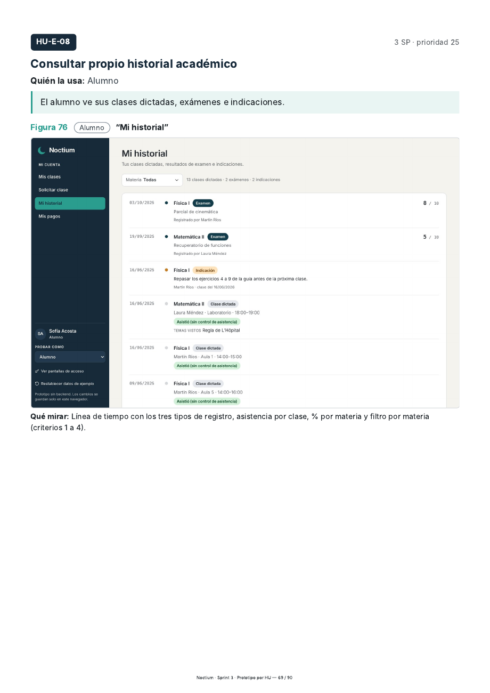
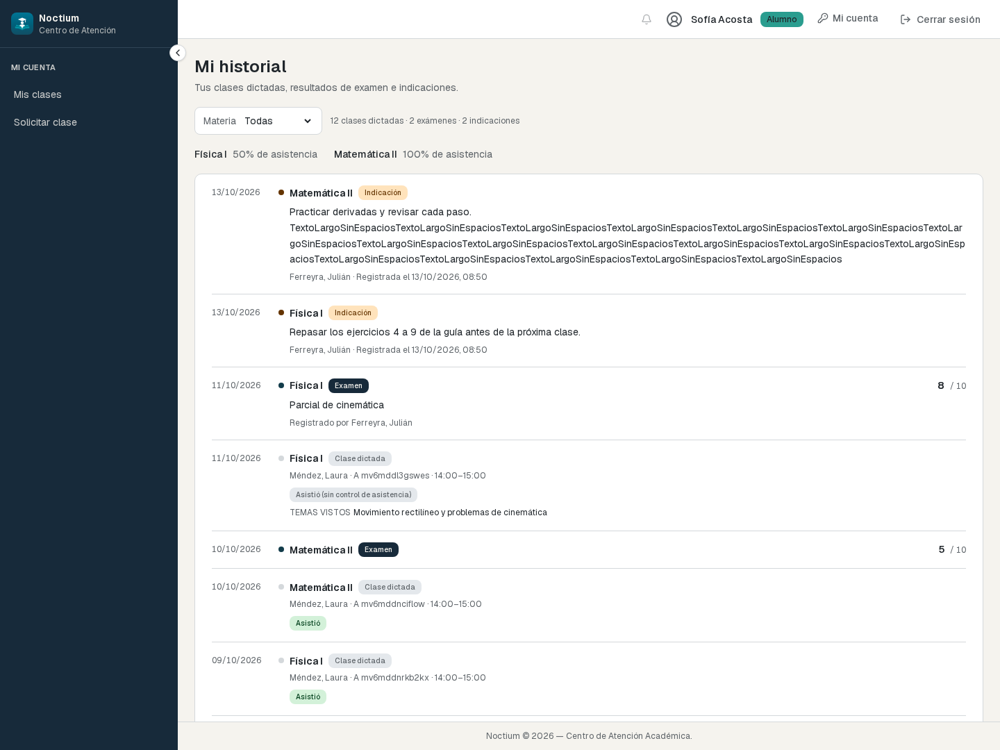
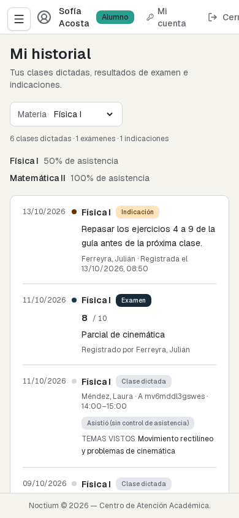

La composición conserva encabezado compacto, filtro y desglose juntos, una tarjeta con fecha → punto → materia y etiqueta → detalle. La nota cambia de posición en móvil sin superposición. Las capturas usan datos descartables reales de pruebas; móvil filtra Física I para mostrar los tres tipos. Pruebas, contrato y limitaciones.


